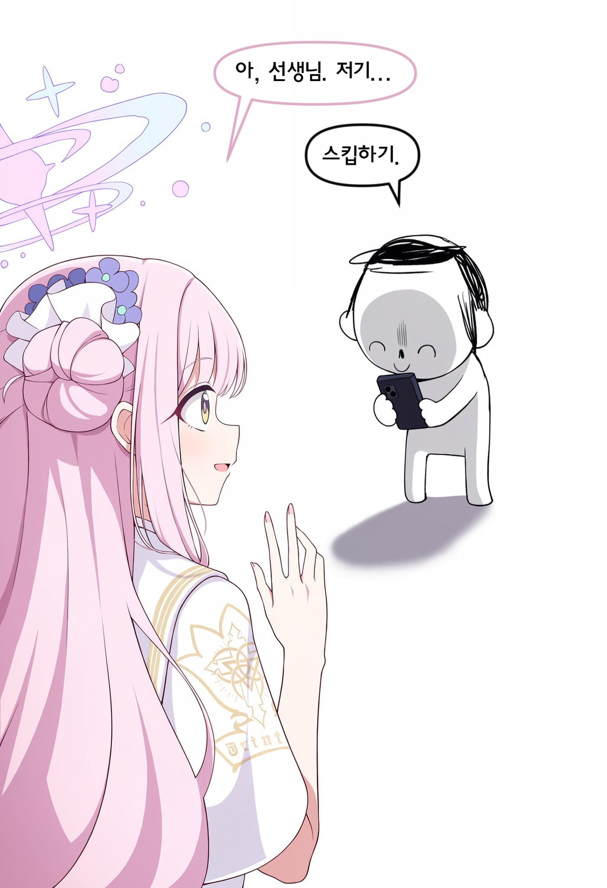
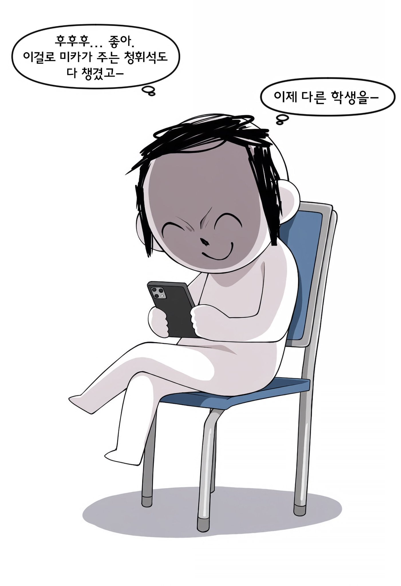
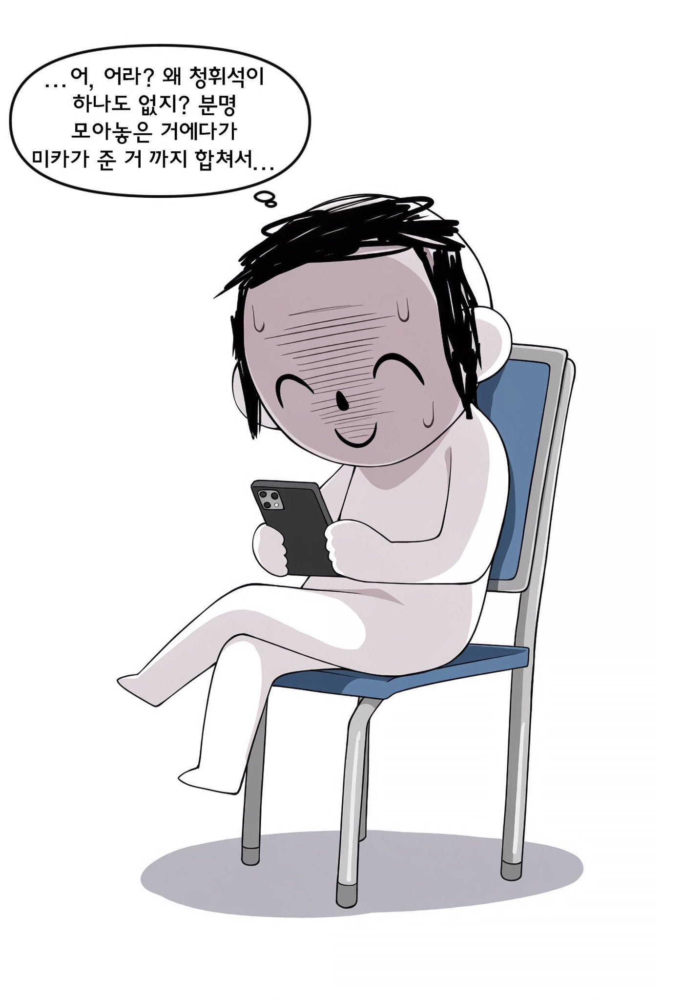
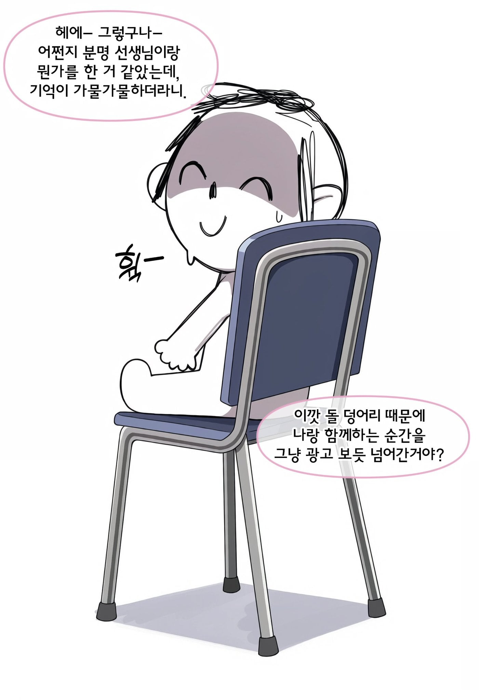
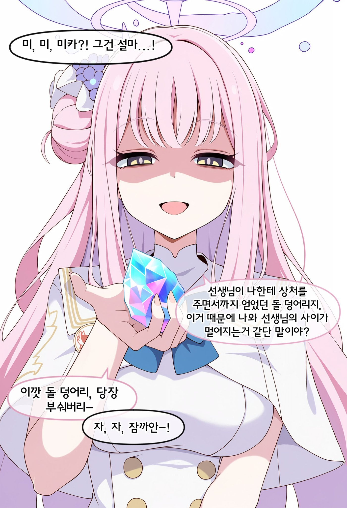
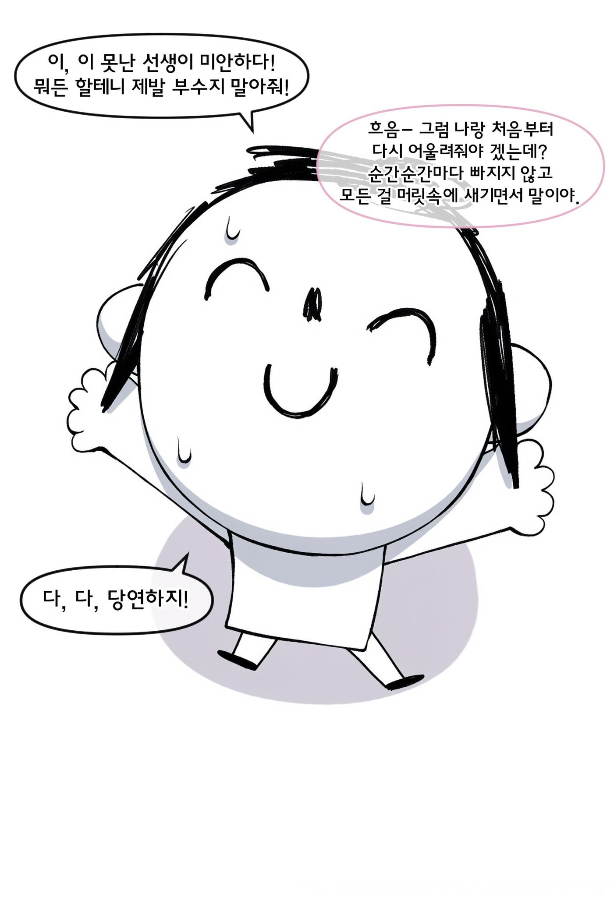
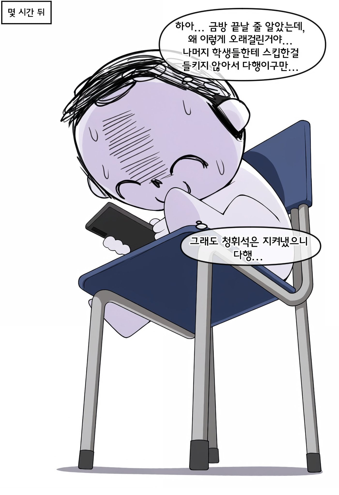
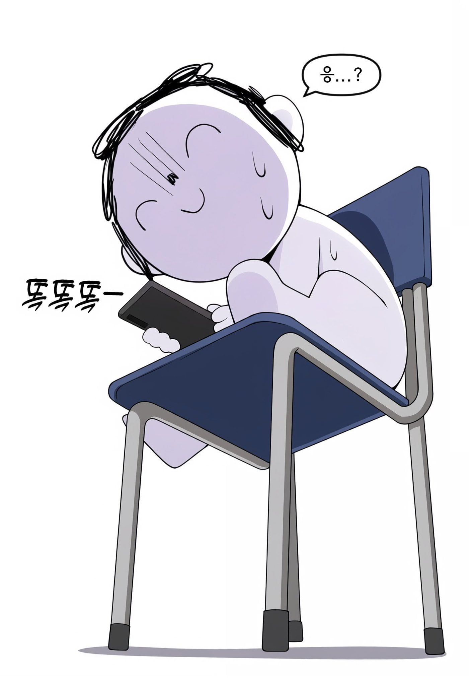
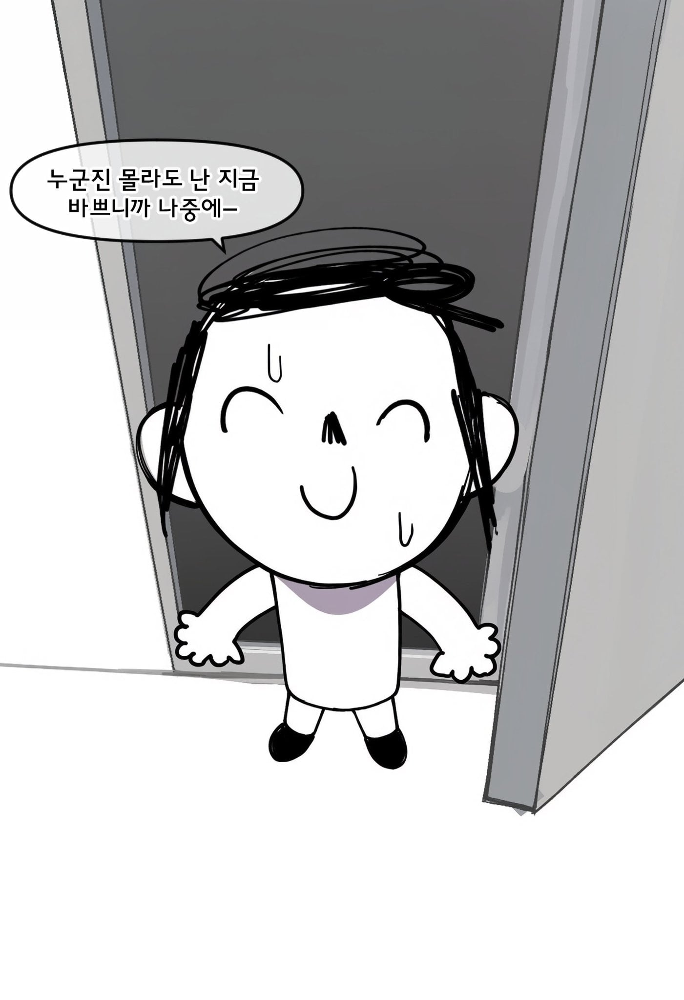
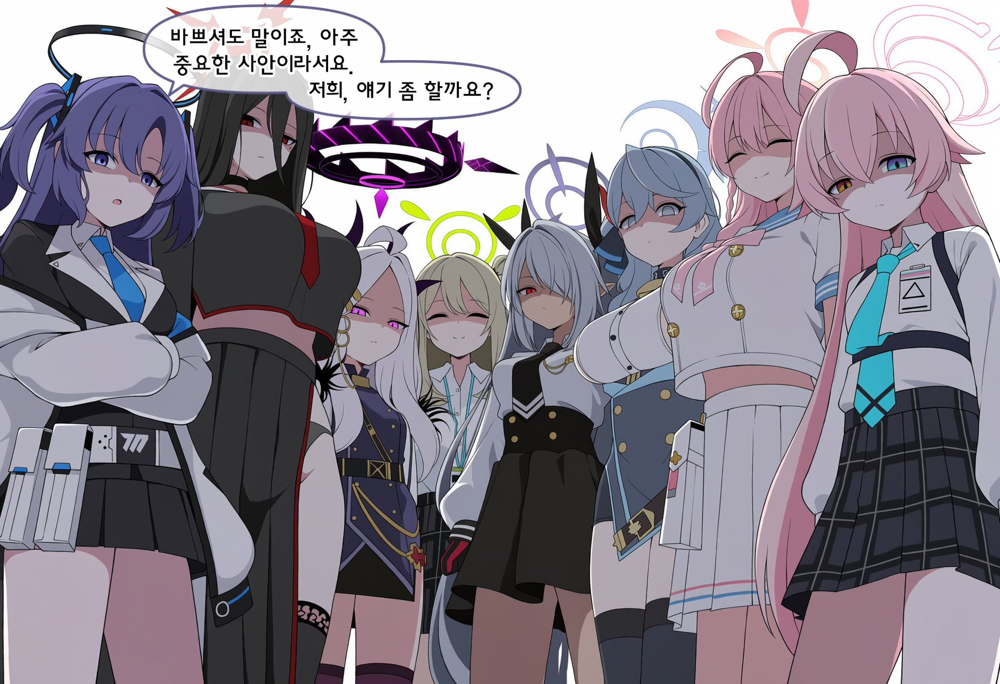










저게 도로롱이야?
그때그때 보면 볼만하겠지만, 보통 적금 마냥 쌓아두다가 필요할 때 깨고, 그걸 하나하나 읽으려면 한 시간은 넘게 써야 해서... 그러니까 어쩔 수 없잖아?
자기전에 인연스토리 하나 보고 자기하는중인데 언제 끝날라나
스토리 하나도 제대로 본적 없음
스토리 내용 별로 없는데 이상하게 늘어져서 보기힘듬
미안 나도 가끔 넘겼어
나도 처음엔 다 볼라그랬는데
나중가니까 최애캐만 보게 되더라
너무 많아
스토리가 조옷나 많아
캐릭터당 1편이면 모르겠는데 많으면 5~6편이 넘으니까 볼 엄두가 안남
쌓인 거 스킵만 하는 데도 3시간 걸림
ㄹㅇㅋㅋ 메모리얼 로비 안보는 악질분탕선생들은 혼나야 돼
인연스는 넘기는게 국룰이야
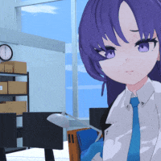


나도 좋아하는 캐릭 말고는 다 넘겼어..
다음화:아루 죽다
인연스가 재밌으면 모르겠는데 최애캐 말고는 딱히
스토리 보는거 좋아해서 최근에 시작해서 하나씩 하고 있는데
미카 스토리는 왜 창났냐 ㅅㅂ
선생 죽다
마지막 접속 : 379일전